Illustrations
RGB Color Cube
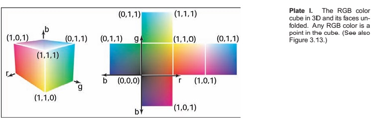
Barycentric Interpolation
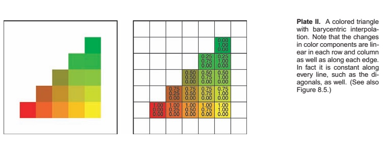
Shading Models
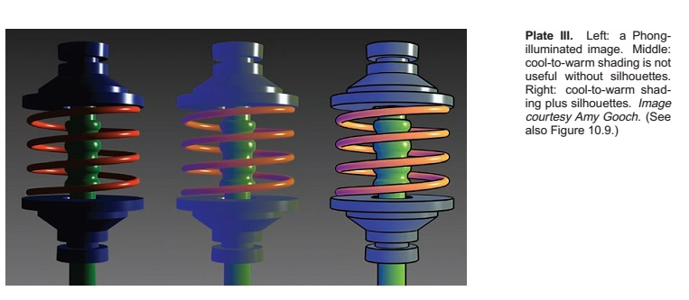
Total Internal Reflection
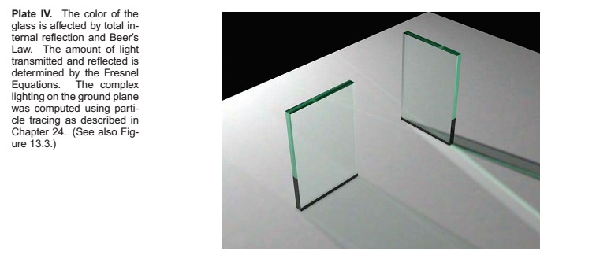
Depth of Field and Caustics
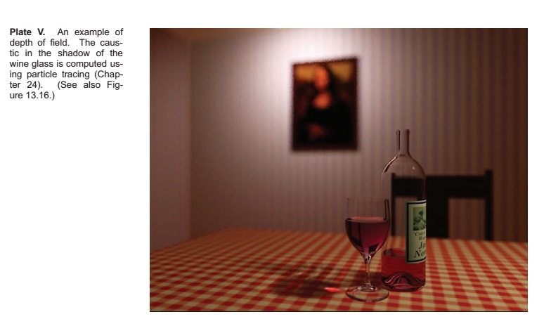
Complex Models using Blob Tree
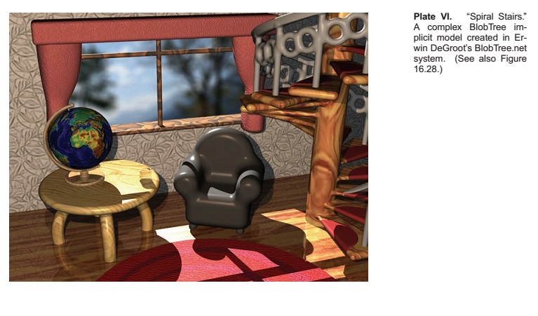
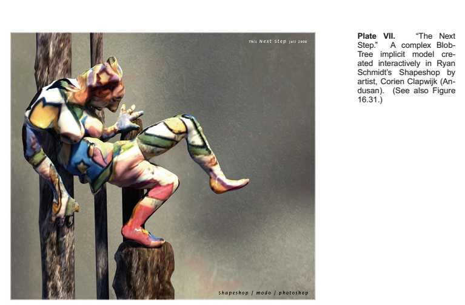
Vertex Shading
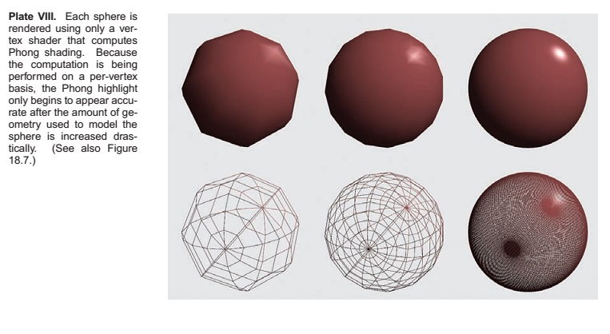
Fragment Shading
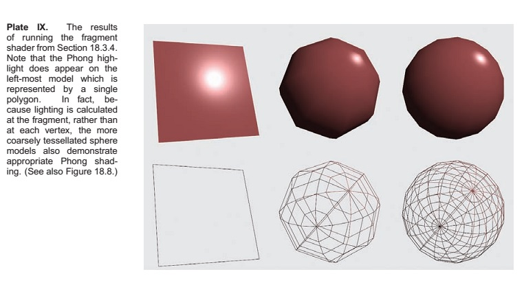
The Visible Spectrum
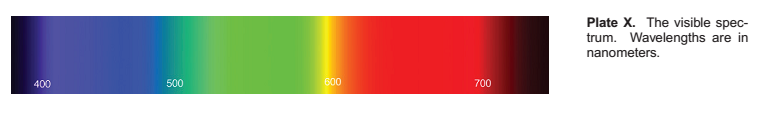
HSV Colorspace
What effect is this?
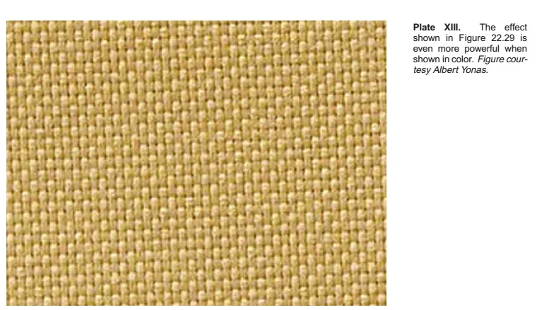
Desaturation
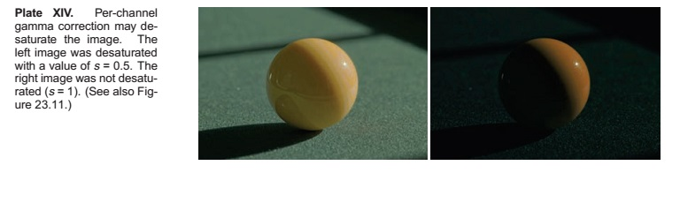
Color Transfer
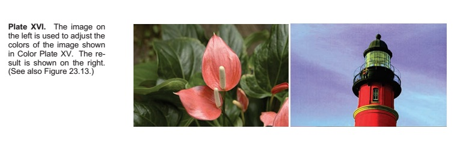
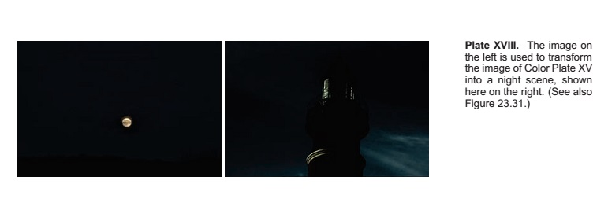
Atmospheric Effects
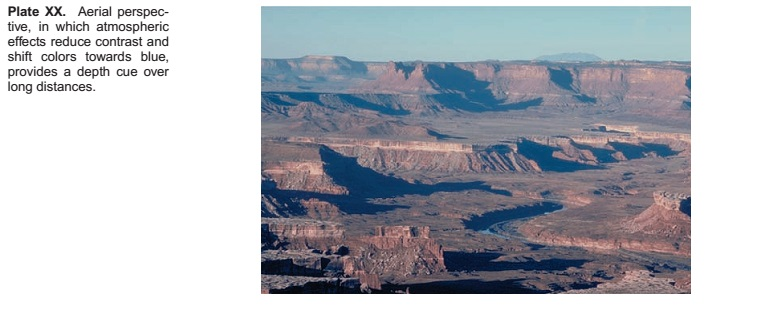
A Comparison
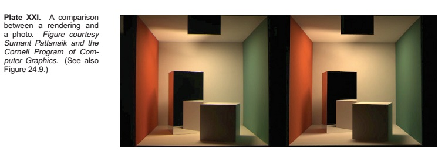
Motion Blur
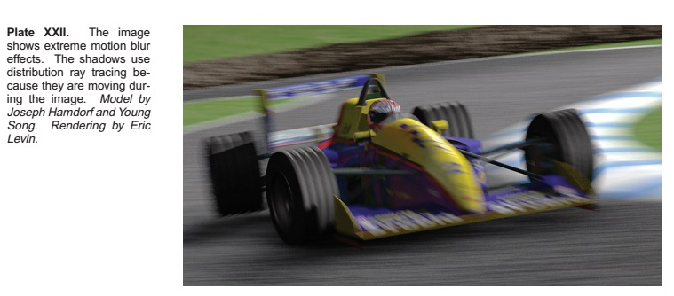
Ray Tracing
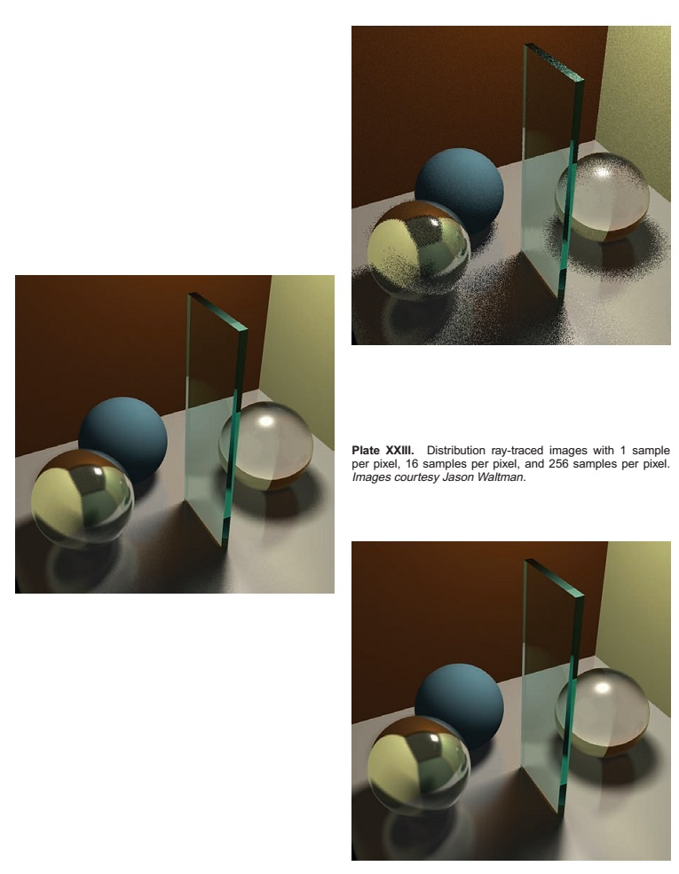
Subsurface Scattering
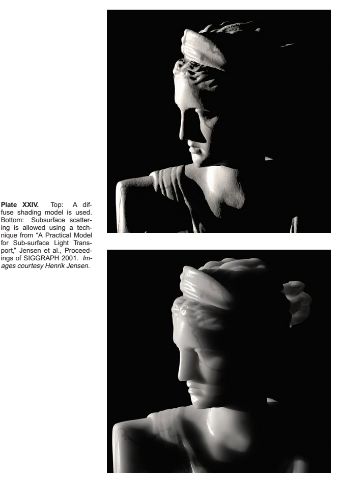
Photon Mapping
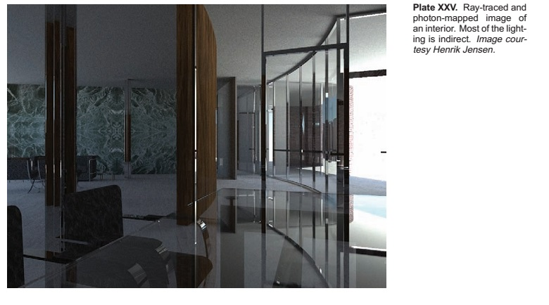
Caustics using Photon Tracing
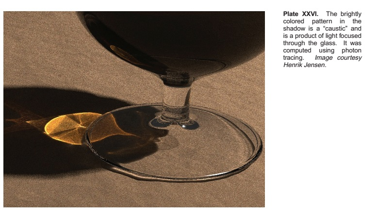
Modelling
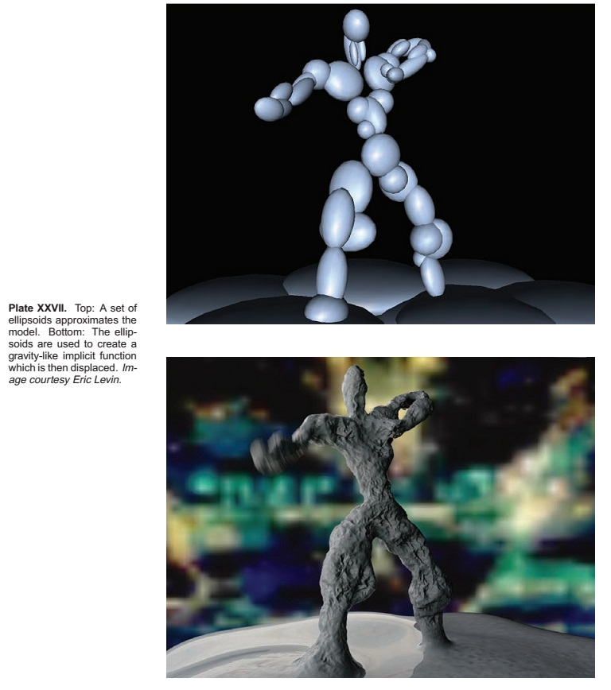